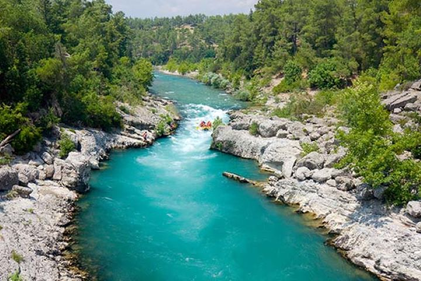
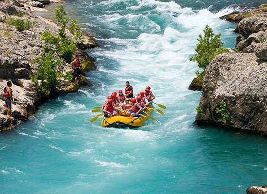
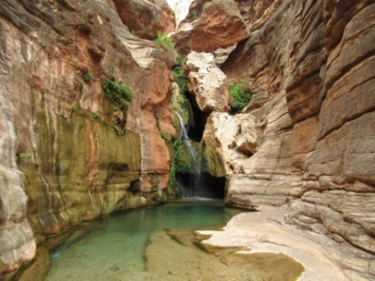
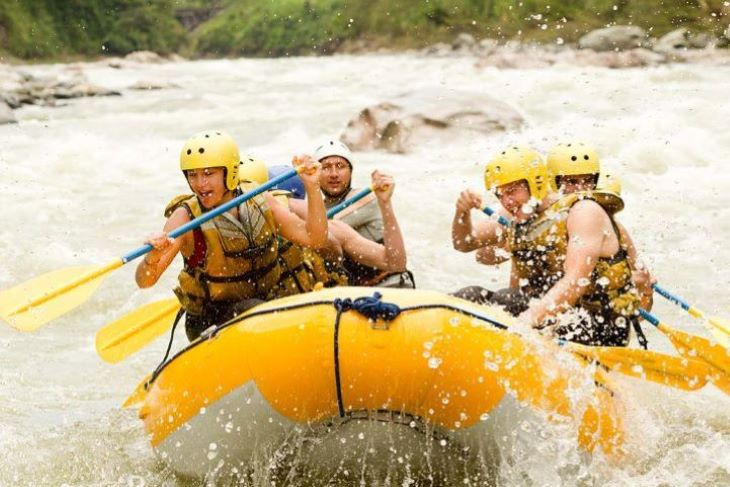

"Ride the Rapids offers an unforgettable adventure, featuring expert guides guiding you through a series of heart-pounding rapids, ensuring a thrilling and memorable experience.

River Rafting Adventures
History
White water rafting was founded in 2005 by outdoor enthusiasts Maureen mbwandira and Chris Chisanga, began as a small venture with a shared passion for exploring the untamed rivers. Recognizing the thrill of navigating rapids, they set out to create an unforgettable experience for adventure seekers.
Adventure Awaits You!
Chasing the white-water dreams – where each rapid is a chapter in the epic tale of nature's raw power.
Dive into the heart-pounding rhythm of river rapids – where every twist and turn is a dance with exhilaration
Conquer the rush, embrace the splash – the river's call echoes with the thrill of untamed adventure!
Navigating the twists, conquering the torrents – in the realm where only the daring find their story.
Riding the rapids, feeling the pulse of the river's heartbeat beneath the kayak. An adrenaline symphony in the heart of nature!